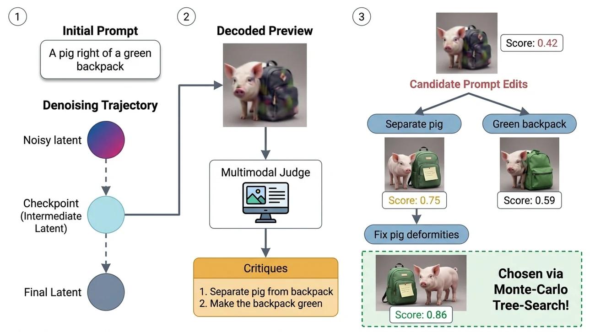
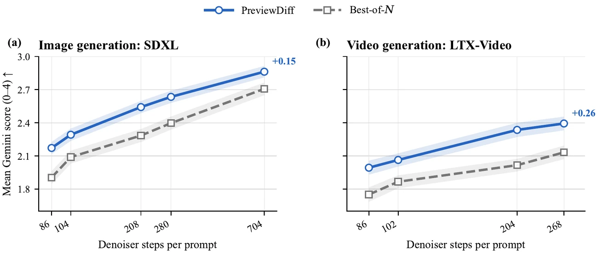
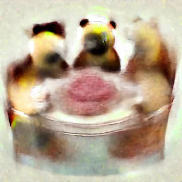
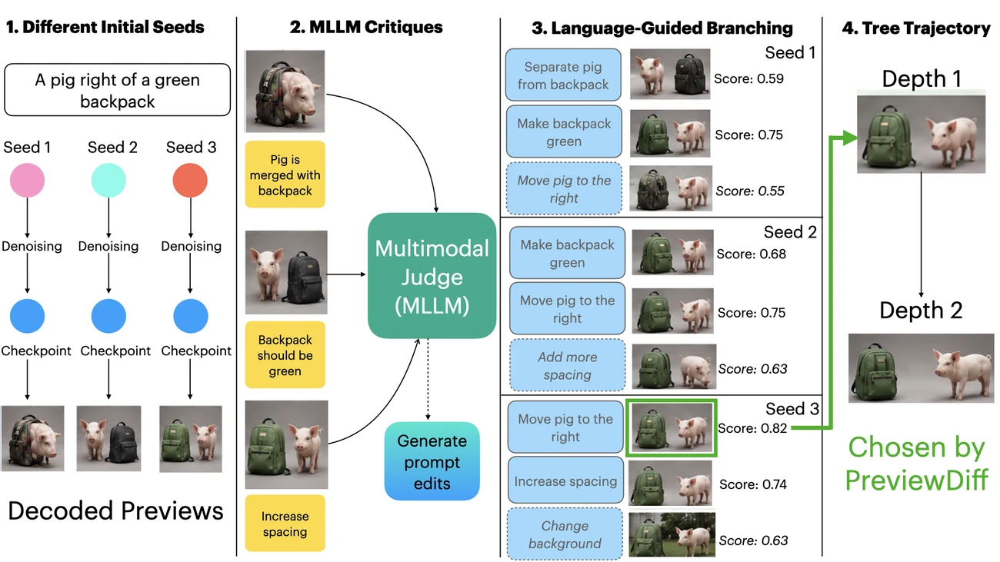
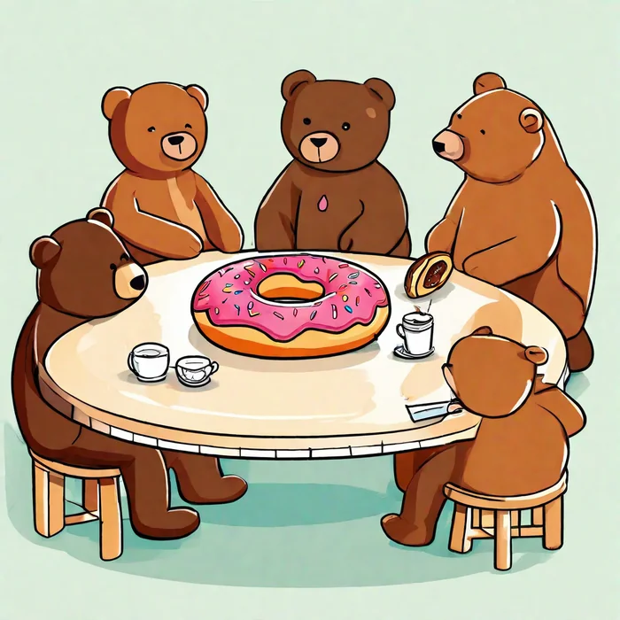
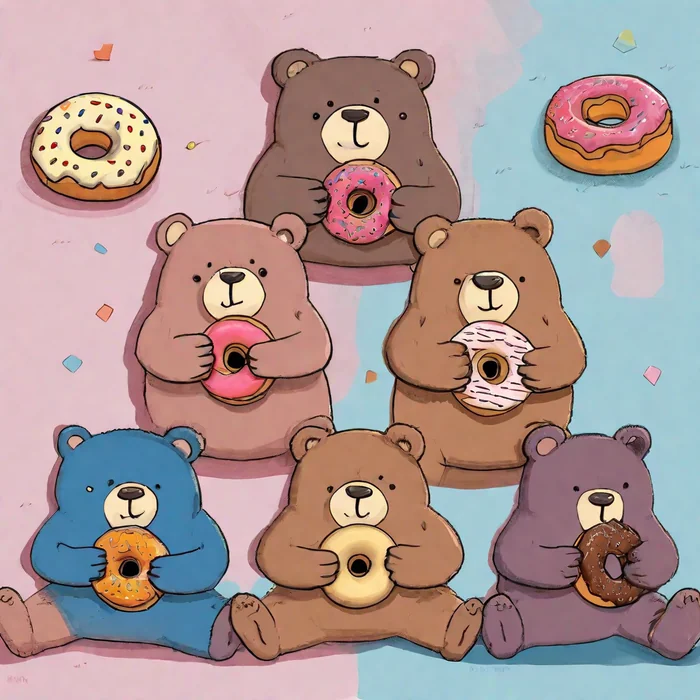
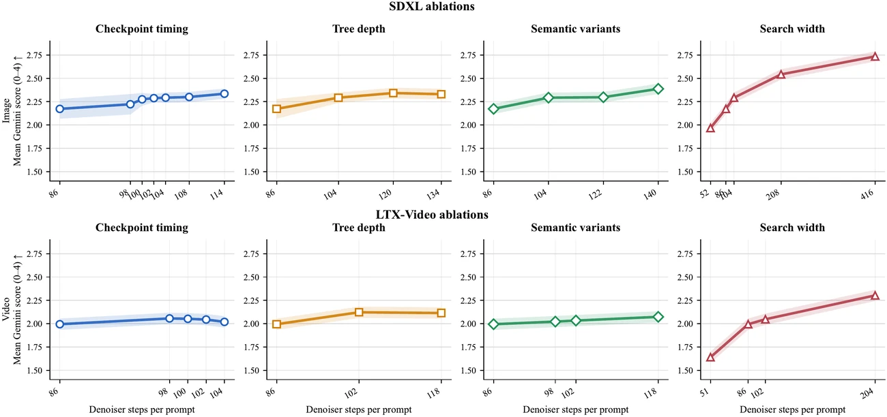
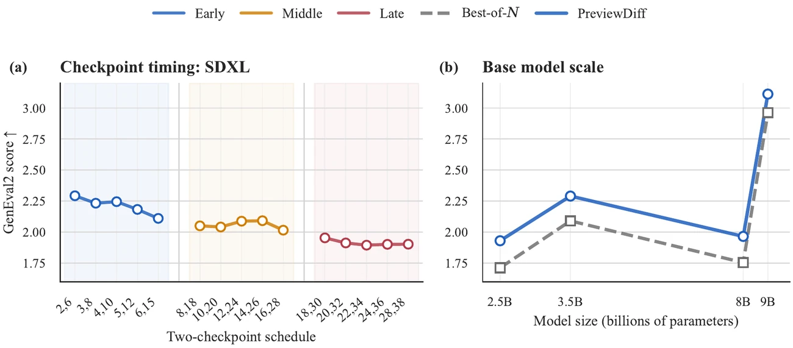
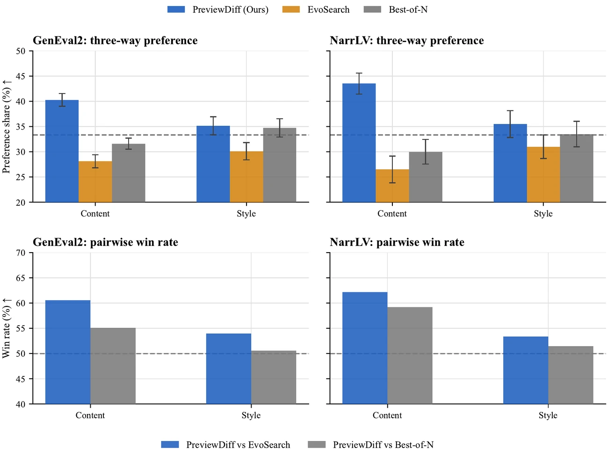

Diffusion models produce striking images and videos, but they still struggle with compositional details such as object counts, attribute binding, spatial relations, and temporally grounded actions. Best-of-N sampling can spend more compute at test time, but it is open-loop: it only chooses among completed outputs and cannot repair a promising trajectory before it fails.
PreviewDiff is a training-free test-time search method that converts diffusion sampling into multimodal, critic-guided search over intermediate latents. At selected denoising checkpoints, it decodes a partial preview, asks a multimodal judge to score and critique it, and uses the resulting natural-language feedback to branch over semantic prompt edits and locally re-noised latent continuations. Across image and video benchmarks, PreviewDiff improves over budget-matched Best-of-N and scalar-search baselines.
Samples many complete outputs, scores each final image or video, and returns the best one. This is simple and strong, but the verifier only acts after mistakes have already been baked into the final sample.
Uses the same kind of multimodal signal earlier. It previews partial denoising states, asks for a critique, branches over targeted semantic fixes plus local latent restarts, and prunes before spending full rollout compute.

The paper reports gains across image generation with SDXL, SD-3.5, and FLUX.2, and video generation with LTX-Video and Wan 2.2. The headline pattern is consistent: spending critic compute inside denoising beats spending it only on final-sample selection.

| Model | Method | GenEval2 Gemini P@4 | GenEval2 Qwen-3 Val | GenEval2 Qwen-3 P@4 | T2I-CoReBench Gemini P@4 | T2I-CompBench++ Gemini P@4 | T2I-CompBench++ BLIP VQA |
|---|---|---|---|---|---|---|---|
| SDXL | PreviewDiff | 2.292 | 1.9765 | 1.975 | 2.015 | 3.474 | 0.4844 |
| SDXL | Best-of-N | 2.090 | 1.5523 | 1.735 | 1.713 | 2.963 | 0.3976 |
| SDXL | EvoSearch | 2.103 | — | 1.6196 | 1.7543 | 3.013 | 0.4521 |
| SDXL | Particle-Sample | 1.902 | — | 1.7544 | 1.9154 | 3.003 | 0.4255 |
| SD-3.5 | PreviewDiff | 1.965 | 1.588 | 1.892 | 1.765 | 2.011 | 0.2566 |
| SD-3.5 | Best-of-N | 1.754 | 1.3854 | 1.713 | 1.545 | 1.913 | 0.2011 |
| FLUX.2 9B | PreviewDiff | 3.112 | 2.675 | 1.983 | 2.781 | 3.758 | 0.7851 |
| FLUX.2 9B | Best-of-N | 2.775 | 2.504 | 1.875 | 2.674 | 3.510 | 0.7256 |
| Model | Method | T2V-CompBench Gemini P@4 | T2V-CompBench Qwen3-VL P@4 | LLaVA-Eval | NarrLV Gemini P@4 | NarrLV Qwen-2.5 Eval | V-Bench 2.0 Gemini P@4 |
|---|---|---|---|---|---|---|---|
| LTX-Video 9B | PreviewDiff | 3.021 | 1.987 | 0.4523 | 2.167 | 62.17 | 3.162 |
| LTX-Video 9B | Best-of-N | 2.716 | 1.411 | 0.3922 | 1.544 | 55.92 | 3.123 |
| LTX-Video 9B | EvoSearch | 2.814 | 1.901 | 0.3713 | 2.012 | 61.14 | 3.071 |
| LTX-Video 9B | Video-T1 | 2.861 | 1.954 | 0.4329 | 2.115 | 61.87 | 3.124 |
| Wan 2.2 A14B | PreviewDiff | 3.541 | 2.019 | 0.6311 | 3.411 | 71.22 | 3.554 |
| Wan 2.2 A14B | Best-of-N | 3.362 | 1.875 | 0.6011 | 2.874 | 68.16 | 3.292 |
| Wan 2.2 A14B | Video-T1 | 3.465 | 1.901 | 0.6266 | 3.229 | — | 3.509 |
Prompt:
You can across root previews and click a child node. The diagram redraws the tree edges and highlights the chosen continuation.

root 0 seed 98052 · cp5Select a root to update its child branches.
Selected child branch.
This paper figure follows one search from intermediate root previews through critic feedback and branch scoring to the selected final generation.

Use the slider to compare PreviewDiff with one Best-of-N sample.


In a snowy nighttime setting, the streetlights cast a warm, orange glow over the quiet street.
The two videos restart together when the example changes. Use “Play all” or “Restart” to compare motion from the same point in time.
The paper’s ablations show that search width produces the largest gains, while depth and semantic variants provide complementary improvements. Earlier checkpoint intervention is useful because it leaves enough denoising time for a correction to affect the sample.


Human raters compare PreviewDiff, Best-of-N, and EvoSearch on content and style. The strongest gains are on content, which matches the method’s focus on prompt adherence: objects, attributes, counts, relations, and actions.
